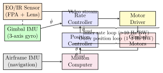
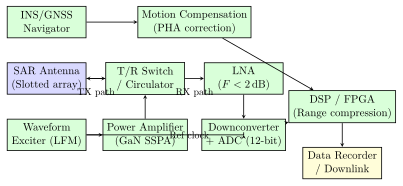

Chapter 9: Payloads and Sensors¶
9.1 Introduction to UAV and Missile Payloads¶
The payload subsystem defines the operational utility of any unmanned aerial vehicle (UAV) or guided weapon system. Whereas the airframe, propulsion, and avionics provide the means of flight, the payload delivers the mission effect — whether that effect is intelligence collection, precision strike, logistics delivery, or electronic warfare suppression. Modern unmanned platforms carry payloads that account for 20%–40% of gross take-off weight (GTOW), and the integration of these payloads into the airframe drives fundamental design constraints in aerodynamics, structural loading, electrical power budgets, thermal management, and electromagnetic compatibility.
This chapter provides comprehensive treatment of the principal payload classes employed on contemporary and next-generation UAVs and cruise missiles. The discussion spans the full spectrum from passive electro-optical (EO) and infrared (IR) sensors, through active synthetic aperture radar (SAR) and laser rangefinders, to offensive weapons, logistical delivery systems, and electronic warfare (EW) suites. Each section addresses physical operating principles, quantitative performance metrics, design equations, integration constraints, and representative fielded systems.
9.1.1 Payload Classification Taxonomy¶
Payloads are classified along two orthogonal axes: function (what the payload does) and interaction mode (whether it is passive, active, or kinetic). Table 9.1 summarises the principal categories.
| Category | Sub-type | Interaction | Primary Application |
|---|---|---|---|
| Intelligence, Surveillance | EO/IR Camera | Passive | ISR, targeting |
| & Reconnaissance (ISR) | Hyperspectral | Passive | MASINT, agriculture |
| SAR/ISAR | Active | All-weather mapping | |
| LiDAR | Active | 3-D mapping, obstacle detect. | |
| SIGINT/ELINT | Passive | Signals collection | |
| Kinetic Effects | Guided bombs | Kinetic | Precision strike |
| Missiles | Kinetic | Stand-off strike | |
| Loitering munition | Kinetic | Time-critical targets | |
| Logistics | Cargo pod | Passive | Resupply, medical |
| Sling load | Passive | Outsized cargo | |
| Electronic Warfare | Jammer | Active | Radar/comms denial |
| DRFM repeater | Active/Deceptive | False target generation | |
| Decoy | Active | Missile saturation | |
| Communications | Relay transponder | Active | BLOS communications |
| Mesh node | Active | Swarm networking |
9.1.2 Payload Performance Trade-space¶
The fundamental payload design trade is between aperture size (which drives sensing performance), mass (which reduces endurance or range), and power consumption (which heats the platform and demands larger batteries or generators). These interdependencies are captured in a generalised payload figure of merit:
where \(P_\mathrm{performance}\) is mission-relevant performance (e.g., spatial resolution in line-pairs/mm, detection range in km, or jam-to-signal ratio in dB), \(m_\mathrm{payload}\) is payload mass in kg, and \(P_\mathrm{electric}\) is average electrical power draw in watts.
9.2 Electro-Optical and Infrared Sensors¶
Electro-optical sensors form the backbone of airborne reconnaissance, target acquisition, and precision guidance. They exploit reflected or emitted electromagnetic radiation in the visible (0.4–0.7 µ m), near-infrared (NIR, 0.7–1.0 µ m), shortwave infrared (SWIR, 1.0–2.5 µ m), mid-wave infrared (MWIR, 3–5 µ m), and longwave infrared (LWIR, 8–12 µ m) bands.
9.2.1 Visible-Band Cameras: CMOS vs CCD Sensors¶
Contemporary airborne cameras almost universally employ one of two focal plane array (FPA) technologies: charge-coupled device (CCD) or complementary metal-oxide semiconductor (CMOS) active pixel sensor (APS).
CCD Architecture. In a CCD, each pixel accumulates photo-generated charge in a potential well. At the end of the integration period, charge is transferred serially toward a single output amplifier by sequentially clocking gate voltages. This serial readout architecture produces outstanding uniformity (fixed-pattern noise \(<0.1\%\)) and very low read noise (2–5 \(e^-\) rms at slow pixel rates), making CCDs superior for faint-source astronomy or long-range surveillance where SNR is critical. However, the serial readout limits frame rate, and full-frame CCDs draw significant power during clocking.
CMOS Architecture. CMOS APS sensors place an amplifier, reset transistor, and select transistor within each pixel (three-transistor, 3T, or four-transistor, 4T architecture). Each pixel is addressed individually (random access), enabling rolling or global shutter readout at very high frame rates. Modern back-illuminated CMOS (BSI-CMOS) sensors achieve quantum efficiency \(>80\%\) across the visible band and read noise of 1–3 \(e^-\), closing much of the historical performance gap with CCD. CMOS sensors also integrate ADCs per column or pixel, dramatically reducing readout power. For UAV applications, CMOS dominates due to lower mass, lower power, and higher frame rates.
Key Sensor Metrics.
-
Resolution (megapixels): Total pixel count \(N = N_H \times N_V\). Common formats: 4K (\(3840 \times 2160 = 8.3\) MP), 61 MP (full-frame, \(9504 \times 6336\)), custom large-format mosaics up to 1.8 GP.
-
Pixel pitch \(p\): Physical size of one pixel, typically 1.4–8 µ m. Smaller pitch → denser array for fixed sensor format, but more diffraction-limited and lower dynamic range.
-
Dynamic Range: \(\mathrm{DR} = 20 \log_{10}(Q_\mathrm{sat}/\sigma_\mathrm{read})\) where \(Q_\mathrm{sat}\) is saturation charge capacity and \(\sigma_\mathrm{read}\) is read noise. Typical values 60–80 dB.
-
Signal-to-Noise Ratio (SNR): Under shot-noise-limited illumination:
where \(Q_e = \eta \Phi t\) is the signal electrons (\(\eta\) = quantum efficiency, \(\Phi\) = photon flux, \(t\) = integration time), \(Q_d\) is dark current electrons per second, \(\sigma_\mathrm{read}\) is read noise, and \(\sigma_\mathrm{ADC}\) is ADC quantisation noise.
- Modulation Transfer Function (MTF): The MTF describes spatial frequency response. The system MTF is the product of individual component MTFs:
The detector MTF for a square pixel of pitch \(p\) is:
where \(f\) is spatial frequency in cycles per mm. The Nyquist frequency is \(f_N = 1/(2p)\).
9.2.2 Lens Optics and Field of View¶
The fundamental thin-lens equation relates object distance \(d_o\), image distance \(d_i\), and focal length \(f\):
For airborne systems, \(d_o \gg f\) (object at near-infinity), so \(d_i \approx f\). The f-number (f/#) is defined as:
A lens with a lower f/# collects more light (irradiance \(\propto 1/(f/\#)^2\)) but is harder to correct for aberrations and is physically larger. Airborne EO lenses typically range from f/2.8 to f/5.6.
The full-angle field of view (FOV) in the horizontal direction is:
where \(W_\mathrm{sensor}\) is the sensor width. For example, a 36 mm sensor with a 50 mm lens: \(\mathrm{FOV}_H = 2\arctan(18/50) = 39.6°\).
9.2.3 Ground Sample Distance¶
The ground sample distance (GSD) is the ground-projected size of one pixel — the most operationally significant metric linking camera optics to image intelligence. It is given by:
where \(H\) is altitude above ground level (AGL) in metres, \(p\) is pixel pitch in µ m, \(f\) is focal length in mm, and GSD is in metres per pixel. Rearranging to find the required focal length for a target GSD:
Example: A UAV at \(H = 300\) m, sensor pixel pitch \(p = 3.76\) µ m (Sony IMX477), requires \(\mathrm{GSD} = 5\) cm. The required focal length is:
The total swath width on the ground at this altitude with a 12.33 mm wide sensor (Sony IMX477, \(4056\times3040\), \(3.76\) µ m pitch):
Table 9.2 shows GSD for representative sensor/altitude combinations.
| Alt (m) | f = 8 mm | f = 16 mm | f = 25 mm | f = 50 mm | f = 100 mm |
|---|---|---|---|---|---|
| 100 | 5.0 cm | 2.5 cm | 1.6 cm | 0.8 cm | 0.4 cm |
| 300 | 15.0 cm | 7.5 cm | 4.8 cm | 2.4 cm | 1.2 cm |
| 1000 | 50.0 cm | 25.0 cm | 16.0 cm | 8.0 cm | 4.0 cm |
| 3000 | 150 cm | 75 cm | 48 cm | 24 cm | 12 cm |
| 10000 | 500 cm | 250 cm | 160 cm | 80 cm | 40 cm |
9.2.4 Infrared Cameras¶
Infrared cameras detect thermal emission from objects according to Planck’s radiation law. The spectral radiance of a blackbody at temperature \(T\) is:
where \(h = 6.626\times10^{-34}\) J s is Planck’s constant, \(c = 3\times10^8\) m/s, \(k_B = 1.381\times10^{-23}\) J/K. Peak emission shifts with temperature according to Wien’s displacement law: \(\lambda_\mathrm{peak} = 2898/T\) µ m (with \(T\) in kelvin). For room-temperature objects (\(T \approx 300\) K), \(\lambda_\mathrm{peak} \approx 9.7\) µ m, well within the LWIR band.
MWIR (3–5 µ m) detectors are predominantly InSb (indium antimonide) or MCT (mercury cadmium telluride, HgCdTe). InSb requires cryogenic cooling to 77 K using a Stirling-cycle cooler to suppress thermally generated dark current. MCT detectors can be bandgap-engineered by varying the Cd/Hg ratio to cover any wavelength from 1–25 µ m and can achieve higher operating temperatures (HOT detectors, up to 150 K) by engineering wider bandgaps. MWIR is preferred when imaging hot targets (jet exhausts, missile plumes), where the contrast against background is maximum.
LWIR (8–12 µ m) detectors include cooled MCT, quantum well infrared photodetectors (QWIPs), and uncooled microbolometers. Uncooled microbolometers use resistive temperature sensors (vanadium oxide, VOx, or amorphous silicon, a-Si) that heat up when IR radiation is absorbed, changing their resistance. Arrays of 640\(\times\)480 or 1024\(\times\)768 are standard; 17 µ m or 12 µ m pitch bolometer arrays are now common. Uncooled detectors eliminate the mass, power, and reliability burden of cryocoolers, making them attractive for small UAVs.
Noise Equivalent Temperature Difference (NETD) is the most important figure of merit for thermal cameras:
where \(\Delta T_\mathrm{noise}\) is the apparent temperature fluctuation due to detector noise, and \(\partial V / \partial T\) is the responsivity. High-performance cooled cameras achieve NETD \(<20\) mK; quality uncooled bolometers achieve 40–60 mK; budget sensors may be 80–120 mK. NETD \(<50\) mK is generally considered the threshold for reliable target recognition at operationally relevant distances.
The Johnson criteria relate target detection, recognition, and identification (DRI) to the number of resolved cycles across the critical dimension of the target:
Detection requires \(N \geq 1\), recognition \(N \geq 4\), identification \(N \geq 8\).
9.2.5 Thermal Imaging System Design¶
The signal chain for a thermal imaging system involves the detector, readout integrated circuit (ROIC), and digital processing. The charge generated per pixel per frame:
where \(\eta\) is quantum efficiency (50–80% for cooled MCT), \(I_\lambda\) is photon irradiance, \(A_\mathrm{pixel}\) is pixel area, and \(t_\mathrm{int}\) is integration time. The ROIC capacitance sets maximum charge storage:
Typical ROIC capacitances are 10–200 fF with voltage swings of 1–3 V, giving well capacities of \(10^7\)–\(10^9\) electrons.
Table 9.3 compares key IR detector technologies.
| Technology | Band | Cooling | NETD | D* | Mass | Power |
| (µ m) | (K) | (mK) | (cm\(\sqrt{\mathrm{Hz}}\)/W) | (kg) | (W) | |
| InSb FPA | 3–5 | 77 | 10–20 | \(3\times10^{11}\) | 0.5–1.5 | 5–15 |
| MCT MWIR FPA | 3–5 | 77–150 | 10–30 | \(2\times10^{11}\) | 0.5–2.0 | 3–10 |
| MCT LWIR FPA | 8–12 | 77 | 15–25 | \(2\times10^{10}\) | 0.5–2.0 | 5–15 |
| QWIP FPA | 8–10 | 77 | 20–40 | \(5\times10^{9}\) | 0.5–1.5 | 5–12 |
| VOx Bolometer | 8–14 | Uncooled | 40–80 | \(2\times10^{8}\) | 0.1–0.5 | 1–3 |
| a-Si Bolometer | 8–14 | Uncooled | 50–100 | \(1\times10^{8}\) | 0.05–0.3 | 0.5–2 |
9.2.6 Gimbal Stabilisation Systems¶
A gyroscopically stabilised gimbal decouples the sensor from airframe motion, maintaining pointing toward a target while the UAV pitches, rolls, and yaws. The performance requirements are stringent: airframe angular rates during turbulence can reach 20–50 deg/s, while image stabilisation requires residual motion \(<0.1\) mrad (equivalent to sub-pixel movement).
2-Axis Gimbals (pan, tilt) are adequate for forward-looking and downward-looking sensors where roll-stabilisation is provided by the airframe’s own roll attitude. They are lighter and simpler.
3-Axis Gimbals (roll, pitch, yaw) provide full decoupling and are required for precision targeting or when the UAV operates with significant roll. The Wescam MX-15D, Raytheon Multi-Spectral Targeting System (MTS-B), and DJI Zenmuse X7 are examples spanning military and commercial markets.
The gimbal control architecture employs cascaded loops:
where \(G_\mathrm{rate}(s)\) is the inner angular rate controller (typically a lead-lag compensator), \(G_\mathrm{pos}(s)\) is the outer position loop, and \(P(s)\) is the plant transfer function. The inner rate loop bandwidth must exceed 10 Hz to reject airframe vibration; outer position loop bandwidth is typically 1–3 Hz. Gyroscopes mounted directly on the camera head (not on the airframe) are essential for inertial rate feedback — this prevents the base motion from appearing as a torque disturbance before the inner loop can reject it.
The required torque motor stiffness against disturbance:
where \(J\) is the gimbal axis inertia and \(B\) is bearing friction. For a 1-kg gimbal with axis radius of gyration 0.05 m, \(J \approx 2.5\times10^{-3}\) kg m\(^2\). At 50 deg/s\(^2\) angular acceleration, \(T \approx 0.22\) N m, setting the motor torque requirement.
9.2.7 Multi-Spectral and Hyperspectral Imaging¶
Multi-spectral imagers capture images in a discrete set of spectral bands, typically: Blue (450 nm), Green (560 nm), Red (650 nm), Red-Edge (730 nm), NIR (840 nm), and optionally SWIR (1550 nm). Separate bandpass filters are applied to each detector or, in a single-sensor design, to a tiled Bayer-like mosaic.
The Normalised Difference Vegetation Index (NDVI), used extensively in agricultural UAV applications, is:
where \(\rho\) denotes band reflectance. NDVI ranges from \(-1\) (water) through 0 (bare soil) to \(+1\) (dense vegetation). Extended indices include the Red-Edge Chlorophyll Index (CIre) and the Enhanced Vegetation Index (EVI):
Hyperspectral imaging captures a continuous spectrum at each pixel — typically 100–400 narrow spectral bands across 400–2500 nm with 5–10 nm spectral resolution. Pushbroom scanners use a line array of pixels with a dispersing element (prism or grating) spreading wavelengths along one dimension of a 2-D detector. As the platform moves, successive lines are scanned, building a 3-D data cube [\(x\), \(y\), \(\lambda\)]. Spectral unmixing algorithms (matched filter, fully constrained least squares) identify material abundances at sub-pixel scale. Representative airborne hyperspectral payloads: Headwall Photonics Nano-Hyperspec (397–1003 nm, 270 bands, 0.36 kg), SPECIM AFX10 (400–1000 nm, 3.0 kg).
9.3 Synthetic Aperture Radar¶
Synthetic aperture radar (SAR) overcomes the fundamental limitation of optical sensors — dependence on daylight and cloud-free conditions — by actively illuminating the scene with microwave or millimetre-wave energy and forming images from the coherent backscatter. SAR is employed on strategic ISR platforms (Global Hawk Block 30 with MP-RTIP), tactical UCAVs, and small commercial SAR satellites (Capella Space, ICEYE), and increasingly on tactical UAVs (\(<100\) kg) carrying miniaturised SAR payloads.
9.3.1 Aperture Synthesis Principle¶
A real-aperture side-looking radar (SLAR) achieves azimuth (along-track) resolution:
where \(\lambda\) is wavelength, \(R\) is slant range, and \(D\) is physical antenna length. At \(R = 10\) km, \(\lambda = 0.03\) m (X-band), \(D = 0.5\) m: \(\delta_\mathrm{az}^\mathrm{SLAR} = 600\) m — tactically useless.
SAR synthesises a large aperture \(L_\mathrm{SA}\) equal to the distance flown while the target remains within the antenna beam. For a focused SAR, the coherent processing gain gives:
This remarkable result shows that SAR azimuth resolution is independent of range and inversely proportional to physical aperture size — a smaller antenna gives finer azimuth resolution because it has a wider beam, dwelling on each point for longer. For \(D = 0.5\) m, \(\delta_\mathrm{az}^\mathrm{SAR} = 0.25\) m regardless of range.
9.3.2 Range Resolution and Chirp Bandwidth¶
Range (cross-track) resolution is determined by the transmit signal bandwidth. For a linear frequency modulated (LFM, or chirp) pulse with bandwidth \(B\):
where \(c = 3\times10^8\) m/s. To achieve \(\delta_r = 0.3\) m, the required bandwidth is \(B = c/(2\delta_r) = 500\) MHz. The time-bandwidth product of the chirp is:
A long pulse (\(\tau = 10\) µ s) with \(B = 500\) MHz gives TBP \(= 5000\), yielding 5000:1 pulse compression gain in signal-to-noise ratio versus a single-frequency pulse of the same energy.
The slant-range resolution maps to ground-range resolution as:
where \(\theta_\mathrm{inc}\) is the incidence angle. At \(\theta_\mathrm{inc} = 45°\), \(\delta_\mathrm{gr} = \sqrt{2}\,\delta_r\).
9.3.3 SAR Modes of Operation¶
Stripmap SAR: The antenna beam is fixed relative to the platform. The synthetic aperture length is \(L_\mathrm{SA} = \lambda R / D\), and azimuth resolution equals \(D/2\) as derived above. Continuous strip mapping trades unlimited along-track coverage for fixed azimuth resolution.
Spotlight SAR: The antenna steers electronically or mechanically to dwell on a specific patch, extending the synthetic aperture to \(L_\mathrm{SA} \gg \lambda R/D\). Azimuth resolution is now:
Spotlight mode achieves sub-0.1 m azimuth resolution at the cost of limited area coverage and more complex Doppler processing (non-linear phase history).
ScanSAR: The beam steps in elevation to cover multiple sub-swaths, widening total swath at the cost of reduced azimuth resolution (reduced dwell per sub-swath). Total swath width can be increased 3–5× compared to stripmap.
Burst-mode (TOPS): Terrain Observation with Progressive Scans (TOPS) sweeps the beam in azimuth, forcing uniform azimuth resolution across a wide swath; used in Sentinel-1.
9.3.4 Pulse Repetition Frequency Constraints¶
The PRF must satisfy two competing constraints simultaneously:
where \(V\) is platform velocity and \(\Delta r_\mathrm{swath}\) is swath extent in slant range. For a \(V = 100\) m/s UAV, \(D = 0.3\) m antenna: PRF \(> 667\) Hz. For a 10 km swath at 45° incidence, \(\Delta r_\mathrm{swath} = 14.1\) km, requiring PRF \(< 10.6\) kHz. The window 667–10,600 Hz is a valid PRF range.
9.3.5 Interferometric SAR and DEM Generation¶
InSAR uses two SAR images acquired from slightly different positions (baseline \(B_\perp\) perpendicular to the line-of-sight). The interferometric phase difference \(\Delta\phi\) between corresponding pixels is:
where \(\Delta h\) is the terrain height difference. The height ambiguity (height difference producing \(2\pi\) phase change) is:
Phase unwrapping (Goldstein branch-cut algorithm, minimum cost flow) converts wrapped phase to absolute height. At X-band (\(\lambda = 31\) mm), \(R = 5\) km, \(B_\perp = 20\) m, \(\theta = 45°\): \(h_\mathrm{amb} \approx 5.5\) m, providing sub-metre height accuracy after unwrapping. TanDEM-X achieves a global DEM with 12 m posting and 2 m absolute vertical accuracy.
9.3.6 Polarimetric SAR¶
Full-polarimetric (quad-pol) SAR transmits and receives horizontal (H) and vertical (V) polarisations, yielding the \(2\times2\) scattering matrix \(\mathbf{S}\):
The Pauli decomposition decomposes \(\mathbf{S}\) into a basis of canonical scatterers:
The three Pauli components correspond to: odd-bounce (surface) scattering, double-bounce (corner reflectors, buildings, trees), and volume (diffuse, vegetation). False-colour Pauli composites allow rapid scene interpretation: urban areas appear bright in the double-bounce channel; forests appear bright in the volume channel.
9.3.7 Miniaturised UAV SAR Systems¶
The IMSAR NSP-5 is representative of a modern miniaturised UAV SAR: 1.5 kg, 30 W, Ku-band, 0.3 m resolution in stripmap, deployable on Group 2 UAVs (MTOW 10–25 kg). The Capella Space X-band satellite SAR constellation achieves 0.5 m spotlight resolution from orbit. Key miniaturisation challenges are: (1) achieving sufficient pulse energy within regulatory emission limits; (2) vibration isolation of the antenna to maintain phase coherence; (3) real-time on-board processing (GPU-accelerated backprojection algorithm) to avoid high-bandwidth downlinks.
9.4 LiDAR and 3D Mapping¶
Light detection and ranging (LiDAR) uses pulsed or modulated laser light to measure distance with centimetre-level accuracy. Airborne LiDAR is the enabling technology for high-resolution terrain models, infrastructure inspection, forest characterisation, and autonomous navigation.
9.4.1 LiDAR Operating Principles¶
Pulsed time-of-flight (ToF) LiDAR measures the round-trip travel time of a laser pulse:
where \(\Delta t\) is time delay between transmit and receive, and \(n\) is refractive index of air (\(\approx 1.0003\)). Timing resolution of 50 ps corresponds to a range precision of \(\approx 7.5\) mm. Laser wavelengths used: 905 nm (lower cost, Class 1 eye-safety with difficulty), 1064 nm (Nd:YAG, high peak power), 1550 nm (erbium-doped fibre, eye-safe at higher power, preferred for aviation).
Geiger-mode APD arrays operate individual avalanche photodiodes in single-photon Geiger mode. A single reflected photon triggers an avalanche and is registered as a detection event. Lidar Associates’ Jigsaw system demonstrated 1.6 billion pulses/second with mm-level resolution. Very low pulse energy is required, permitting high PRF and dense point clouds.
FMCW LiDAR (frequency-modulated continuous wave) transmits a chirped laser and measures range by the beat frequency between transmitted and received signals:
where \(\Delta f\) is chirp bandwidth and \(T_\mathrm{sweep}\) is sweep period. FMCW also inherently measures radial velocity from the Doppler shift:
This simultaneous range and velocity measurement makes FMCW LiDAR attractive for autonomous vehicle obstacle avoidance. Companies including Aeva, Aurora, and Luminar have commercialised FMCW LiDAR.
9.4.2 Point Cloud Metrics and Full-Waveform Analysis¶
Airborne LiDAR point density (points per square metre) is:
where \(n_\mathrm{lines}\) is scan lines per second, \(V_\mathrm{GS}\) is ground speed, \(W_\mathrm{scan}\) is scan strip width. Typical topographic mapping requires \(\geq 4\) pts/m\(^2\); structural inspection requires \(\geq 50\) pts/m\(^2\).
Full-waveform LiDAR digitises the entire returned pulse at 1–2 GHz sampling rate, yielding a waveform \(I(t)\) that encodes the vertical distribution of reflecting surfaces. Decomposition by Gaussian fitting:
extracts \(N\) discrete returns with amplitude \(A_k\), range \(R_k = c t_k/2\), and pulse width \(\sigma_k\). This enables canopy penetration for forest biomass estimation, detection of low-lying terrain under vegetation, and characterisation of surface roughness.
9.4.3 3D Mapping Pipeline¶
The airborne LiDAR mapping pipeline integrates multiple sensor streams:
where \(\mathbf{p}_\mathrm{laser} = [R\cos\theta, R\sin\theta, 0]^T\) is the point in laser-scanner frame, \(\mathbf{T}_\mathrm{IMU}^\mathrm{laser}\) is the boresight calibration transform (determined in a calibration flight), and \(\mathbf{T}_\mathrm{world}^\mathrm{IMU}(t)\) is the IMU/GNSS trajectory. GNSS-aided inertial navigation provides position accuracy \(\leq 5\) cm (RTK GNSS) and angular accuracy \(\leq 0.02°\) (tactical-grade IMU), driving absolute point accuracy of 2–5 cm vertically.
LiDAR SLAM algorithms (LOAM, LIO-SAM) fuse point clouds with IMU data to estimate ego-motion without GPS, critical for indoor or GPS-denied environments. The LIO-SAM factor graph optimises IMU preintegration factors, LiDAR odometry factors, and GPS factors simultaneously using GTSAM.
9.5 SIGINT and ELINT Payloads¶
Signals Intelligence (SIGINT) payloads are passive electronic sensors that intercept, record, and analyse electromagnetic emissions. SIGINT divides into Communications Intelligence (COMINT, intercepting communications signals) and Electronic Intelligence (ELINT, characterising radar and electronic systems).
9.5.1 Electronic Support Measures (ESM)¶
An ESM system is fundamentally a broad-band receiver covering 0.1–18 GHz (sometimes 40 GHz) that detects, measures, and classifies emitters of interest. Key functions:
-
Frequency measurement: Instantaneous frequency measurement (IFM) receiver resolves frequency to 1 MHz accuracy within nanoseconds.
-
Direction finding (DF): Determines the azimuth to the emitter.
-
Pulse parameter extraction: RF frequency, pulse width, pulse repetition interval (PRI), scan period, antenna polarisation.
-
Emitter identification: Match measured parameters against an emitter library (Electronic Order of Battle, EOB).
9.5.2 Direction Finding Techniques¶
Angle-of-Arrival (AOA) interferometry exploits the phase difference between signals received at two antennas separated by baseline \(d\):
where \(\theta\) is the bearing to the emitter. Solving for \(\theta\):
Ambiguities arise when \(d > \lambda/2\) (the phase difference exceeds \(2\pi\)). Multi-baseline interferometers (short, medium, and long baselines) resolve ambiguities: the short baseline (typically \(d = \lambda/2\)) provides unambiguous but coarse angle; the long baseline (up to \(10\lambda\)) provides fine resolution. DF accuracy \(\sigma_\theta\):
TDOA (Time Difference of Arrival): Multiple UAVs or sensors measure the arrival time difference of the same emitter signal. Two TDOA measurements from three platforms yield two hyperbolic LOBs whose intersection fixes the emitter position. TDOA accuracy depends on timing synchronisation (GPS PPS to 100 ns) and signal bandwidth.
9.5.3 Software-Defined Radio SIGINT Platforms¶
Modern SIGINT payloads are almost universally SDR-based, providing reconfigurability across frequency bands and waveforms:
-
HackRF One: 1 MHz–6 GHz; 20 MHz BW; 8-bit ADC; $320. Useful for hobby/research.
-
Ettus USRP B210: 70 MHz–6 GHz; 56 MHz BW; 12-bit ADC; \(\approx\)$1,100. Research/academic.
-
Pentek Jade XMC: DC–3 GHz; 3.2 GS/s; 16-bit; rugged; MIL-grade.
-
Mercury Systems ECDR-214: 2-channel wideband; VITA 57.1 FMC; FPGA processing.
The instantaneous dynamic range requirement for a military SIGINT payload is typically \(>70\) dB (to simultaneously detect weak signals in the presence of strong interferers), driving ADC bit depth to 14–16 bits and requiring low-noise front-end LNAs with \(<2\) dB noise figure.
9.6 Weapons Payloads for UCAVs¶
Unmanned combat aerial vehicles (UCAVs) carry a range of precision guided munitions (PGMs), air-to-surface missiles, and loitering munitions. The integration of weapons onto UAV platforms introduces unique challenges related to structural certification, arming safety, and release dynamics.
9.6.1 Electrical and Mechanical Integration¶
The NATO standard electrical interface for smart weapons is MIL-STD-1760, defining a 38-pin electrical connector that carries:
-
MIL-STD-1553B data bus (1 Mbit/s) for weapon initiation/status commands
-
28 V DC power for weapon electronics
-
Umbilical safety wire (fires weapon enable when released)
-
Fuze arming and firing discrete signals
-
High-speed Ethernet (1000BASE-T) in the latest Block D revision
The suspension and release unit (SRU) must provide the correct ejection force to clear the weapon from the aerodynamic wake before fins deploy. Ejection force \(F_e\) must satisfy:
where \(m_w\) is weapon mass, \(a_\mathrm{escape}\) is required separation acceleration (\(\geq 9.81\) m/s\(^2\)), \(\gamma\) is flight path angle, \(q\) is dynamic pressure, and \(C_{D,w}\) is weapon drag coefficient.
9.6.2 Representative Guided Weapons¶
GBU-39 Small Diameter Bomb (SDB): Mass 110 kg; GPS/INS guidance; 13 cm diameter; 1.8 m length; glide range \(>110\) km from 40,000 ft release; CEP \(<5\) m. The SDB’s small cross-section (0.013 m\(^2\)) allows four weapons per standard 1000 lb hardpoint station. SDB II (GBU-53/B) adds tri-mode seeker (MMW, IR, semi-active laser) for moving target engagement.
AGM-114 Hellfire: Mass 49 kg; length 1.63 m; diameter 178 mm; warhead 9 kg shaped charge HEAT; range 8 km; guidance: semi-active laser (SAL) homing or millimetre-wave (MMW) radar seeker (AGM-114L Longbow). Variants include thermobaric (AGM-114N) and kinetic energy rod (AGM-114R9X) warheads. Reaper (MQ-9) carries four Hellfire on two wing pylons.
Brimstone: BAE Systems dual-mode SAL/MMW missile; mass 48.5 kg; range 12+ km (powered, sea-skimming capable); active MMW seeker (Ku-band FMCW) enables autonomous target selection within a pre-defined engagement zone, permitting salvo firing without per-missile laser designation. Brimstone is qualified on the Protector (MQ-9B).
The guidance accuracy for a laser-homing seeker follows a proportional navigation law; the miss distance (CEP) is a function of seeker noise and navigation ratio \(N'\):
where \(\sigma_\varepsilon\) is seeker angular noise (mrad), \(t_\mathrm{go}\) is time-to-go (s), and \(K_\sigma\) depends on navigation ratio (typically \(K_\sigma \approx 0.3\) for \(N' = 4\)).
9.7 Cargo and Logistics Payloads¶
The application of UAVs to logistics — medical resupply, e-commerce last-mile delivery, and military forward resupply — has driven a distinct class of payload integration requirements focused on load carriage, quick release, and delivery accuracy.
9.7.1 Load Carrying and Centre of Gravity Management¶
For a UAV with gross take-off weight \(W_\mathrm{GTOW}\), the payload CG offset \(\Delta x\) shifts the total CG by:
CG shift must remain within the flight envelope CG envelope (typically \(\pm 5\)% MAC for fixed-wing, \(\pm 30\) mm from gimbal centre for multirotor). Adjustable payload rails or ballast systems compensate for variable payload masses.
Vibration isolation of fragile cargo (medical diagnostics, blood products) uses passive elastomeric isolators designed so:
to place the natural frequency below the dominant airframe vibration frequency (propeller fundamental and harmonics, typically 80–200 Hz for small multirotor). Isolation effectiveness at frequency ratio \(r = f/f_\mathrm{nat}\):
For \(r = 10\) and \(\zeta = 0.05\): \(T_\mathrm{isolation} \approx 0.011\) (-39 dB), meaning only 1.1% of vibration amplitude is transmitted to the payload.
9.7.2 Precision Delivery Systems¶
Zipline uses a fixed-wing UAV that flies overhead and drops a package on a winch-lowered cord, achieving \(\pm 3\) m delivery accuracy in rural Rwanda and Ghana. A simple drop delivery without winch relies on GPS waypoint positioning plus wind compensation:
where \(H\) is release altitude and \(\sqrt{2H/g}\) is approximate free-fall time. Wing (Alphabet) hovers the delivery drone above the target and lowers the package on a tether, achieving \(\pm 5\) m accuracy without landing. Amazon Prime Air uses sensor fusion (computer vision + GPS) for \(\pm 30\) cm positioning.
9.8 Electronic Warfare Payloads¶
Electronic warfare payloads carried by UAVs range from small battery-powered spot jammers on loitering munitions to sophisticated multi-function EW suites on MALE/HALE platforms. EW payloads are categorised as: Electronic Attack (EA), Electronic Protection (EP), and Electronic Support (ES).
9.8.1 Radar Jamming Principles¶
For a jammer to effectively deny a radar’s ability to detect a target, the jammer-to-signal (J/S) ratio at the radar receiver must exceed a threshold \(\Gamma_J\). The J/S ratio for a stand-off jammer is:
where \(P_J\) is jammer power, \(G_J\) is jammer antenna gain toward the radar, \(\sigma_T\) is target RCS, \(R_T\) is target-to-radar range, \(P_T\) is radar transmit power, \(G_T\) is radar antenna gain, and \(R_J\) is jammer-to-radar range. This shows J/S improves as \(R_J^{-2}\) while signal falls as \(R_T^{-4}\) — jamming becomes relatively easier as the jammer approaches the radar.
Digital RF Memory (DRFM) Jammer: A DRFM samples the incoming radar pulse, stores it in digital memory, and retransmits it with programmable delay and Doppler modifications. This creates false target echoes that the radar cannot distinguish from real targets. The false target range offset:
A 100 ns additional delay creates a false target 15 m further away. DRFM jammers are the primary counter-measure against modern pulse Doppler and FMCW seekers.
9.8.2 GPS Denial¶
The minimum received GPS signal power at the antenna is \(-130\) dBm (L1 C/A). A GPS jammer with EIRP of \(P_J G_J\) watts denies GPS reception within a radius \(R_J\) where:
More practically, GPS receivers track signals when the jamming-to-noise ratio \(J/N_0 > C/N_0 - 3\) dB. At this margin, tracking becomes unreliable. A 1 W omnidirectional GPS jammer (\(0\) dBi) denies standard GPS receivers at roughly 25 km radius (free space); in practice terrain and blockage reduce this to 5–15 km for airborne jammers.
9.9 Payload Integration Engineering¶
Payload integration is a systems engineering discipline that bridges payload performance requirements with airframe structural, electrical, and thermal constraints. Failures in integration — unexpected vibration, EMI corruption of sensor data, CG shifts beyond limits — are a leading source of mission failure in operational UAV programmes.
9.9.1 Weight, Balance, and Mass Properties¶
The payload mass fraction, defined as \(f_\mathrm{pl} = m_\mathrm{payload}/m_\mathrm{GTOW}\), directly determines endurance through the Breguet range equation. For a multirotor UAV:
where \(A_\mathrm{disk}\) is the total rotor disk area and \(\rho\) is air density. Adding payload mass \(\Delta m\) reduces endurance by:
A 10% payload mass increase reduces hover endurance by approximately 15%.
9.9.2 Electrical Interface Standards¶
Table 9.4 summarises the principal electrical and data bus standards used for UAV payload integration.
| Standard | Type | Data Rate | Max Nodes | Application |
|---|---|---|---|---|
| MIL-STD-1553B | Serial, half-duplex | 1 Mbit/s | 31 RTs | Weapons, avionics |
| RS-422 | Serial, full-duplex | 10 Mbit/s | 10 receivers | Sensors, comms |
| RS-485 | Serial, half-duplex | 10 Mbit/s | 32 nodes | Multi-drop bus |
| CAN bus | Serial, half-duplex | 1 Mbit/s | 127 nodes | Actuation, ESC |
| 100BASE-TX Eth | Full-duplex | 100 Mbit/s | Unlimited | Video, high-BW |
| 1000BASE-T Eth | Full-duplex | 1 Gbit/s | Unlimited | SAR, hyperspectral |
| ARINC 429 | Serial, unidirectional | 100 kbit/s | 1 Tx/20 Rx | Legacy avionics |
| SpaceWire | Serial, full-duplex | 200 Mbit/s | 32 nodes | Space/mil sensors |
Hot-plug protection must prevent inrush currents from damaging power rails when payloads are connected with power applied. A simple solution uses a P-channel MOSFET with gate-drive slew rate limiting (inrush \(= C_\mathrm{bypass} \cdot dV/dt\)). For a payload with 1 mF bypass capacitance and a target inrush \(<1\) A: \(dV/dt < 1000\) V/s, achieved with a 10 ms power-up ramp.
9.9.3 Vibration Isolation Design¶
Airframe vibrations originate primarily from rotor/propeller blade passing frequencies. For an electric multirotor with \(N_p\) propeller blades at RPM \(n\):
A hex-rotor at 8000 RPM with 3-blade propellers: \(f_\mathrm{BPF} = 400\) Hz. A 3-axis passive isolator using D30 polymer mounts achieves 20 dB insertion loss at 400 Hz when natural frequency is designed at \(f_\mathrm{nat} \approx 25\) Hz (\(r = 16\)).
9.9.4 Thermal Management¶
Payload waste heat must be conducted and/or convected to the airstream. The thermal resistance from payload junction to ambient:
where \(\theta_{j-c}\) is junction-to-case (device), \(\theta_{c-h}\) is case-to-heatsink (TIM), and \(\theta_{h-a}\) is heatsink-to-ambient. For a 10 W payload in a 60°C ambient with maximum junction temperature 125°C:
Forced convection cooling achieves \(h \approx 50\) W/m\(^2\) K on a finned surface. Required fin area: \(A_\mathrm{fin} = P / (h \cdot \Delta T) = 10 / (50 \times 30) = 0.0067\) m\(^2 = 67\) cm\(^2\).
9.9.5 EMI/EMC Compliance¶
MIL-STD-461G specifies emission and susceptibility limits for equipment installed on military vehicles and aircraft. Key requirements:
-
CE101/CE102: conducted emissions on power leads (30 Hz–10 MHz)
-
RE102: radiated emissions from equipment (2 MHz–18 GHz)
-
CS101/CS114: conducted susceptibility
-
RS103: radiated susceptibility (field strength 10–200 V/m)
Digital payload processors switching at clock frequencies 100 MHz–2 GHz radiate clock harmonics across the RF spectrum. Shielding attenuation for a metal enclosure with aperture:
An aperture of 10 mm at 10 GHz (\(\lambda = 30\) mm): SE \(= 20\log_{10}(30/20) = 3.5\) dB — marginal. Waveguide-below-cutoff honeycomb panels achieve \(>100\) dB shielding for the same physical opening by cutting off propagation of wavelengths \(\lambda > 2d_\mathrm{cell}\).


9.9.6 Payload Management System Architecture¶
The payload management system (PMS) is the onboard computing and software layer that orchestrates multiple payload subsystems, manages recording, and provides the interface to the ground control station. Modern PMS architectures use a publish-subscribe middleware (DDS or ROS2) to decouple payload drivers from mission logic. Key PMS functions:
-
Payload health monitoring: Periodic health-check messages; watchdog timers; power cycling on fault.
-
Recording management: Circular buffer with time-tagged sensor data; metadata injection (GPS, IMU, time); STANAG 4609 KLV metadata for EO/IR video.
-
Tasking and scheduling: Priority-based payload tasking queue; sensor slewing commands; coordinate transforms.
-
Data compression: H.264/H.265 video encoding; LAS compression for point clouds; CCSDS lossless compression for science data.
-
Downlink management: STANAG 4607 GMTI reports; STANAG 4609 video; prioritised delivery over constrained satellite or radio links.
9.9.7 Summary Table: Representative UAV Payload Systems¶
| System | Type | Mass | Power | Key Performance | Platform | |
| (kg) | (W) | |||||
| DJI Zenmuse X7 | EO camera+gimbal | 0.449 | 12 | 24 MP, 6K video | Matrice 300 | |
| FLIR Vue Pro 640 | LWIR uncooled | 0.092 | 2 | 640\(\times\)512, 13mm, 50 mK | DJI/Parrot | |
| Wescam MX-20 | EO/IR/LRF turret | 38 | 200 | 20” diam, 10-sensor, SAL | Predator/Hawk | |
| IMSAR NSP-5 | Ku-band SAR | 1.5 | 30 | 0.3 m stripmap | Group 2+ | |
| Velodyne HDL-32E | Scanning LiDAR | 2.0 | 12 | 32 beams, 100m range | Multirotor | |
| Ouster OS1-128 | Solid-state LiDAR | 0.447 | 14 | 128 beams, 120m, 2600 pts/shot | Fixed-wing | |
| Raytheon MTS-B | EO/IR/LRF/LGM | 54 | 400 | LWIR/MWIR/CCD/SAL | Predator/Gray Eagle | |
| Hellfire AGM-114R | ATGM | 49 | n/a | 8 km, SAL/MMW dual | Reaper/Apache | |
| GBU-39 SDB | Glide bomb | 110 | n/a | 110 km glide, GPS/INS | F-15/MQ-9B |
9.10 Conclusion¶
Payloads define the operational value of any unmanned system. The design and integration of EO/IR sensors, SAR, LiDAR, SIGINT, weapons, cargo, and EW equipment demands mastery of optics, microwave engineering, structural mechanics, power electronics, and software engineering. The trend toward sensor fusion — combining passive EO/IR with active SAR and LiDAR, coupled with onboard AI for real-time exploitation — is transforming UAV payloads from simple data-collecting devices into autonomous battlespace decision-support systems. The following chapters on Software and AI (Chapter 10) and Communications (Chapter 12) examine the enabling digital infrastructure that extracts operational value from the raw data these sensors produce.
Key quantitative takeaways:
-
GSD \(= H \cdot p / (f \times 10^3)\); for sub-10 cm GSD at 300 m altitude, focal lengths of 15–25 mm with 4 µ m pitch sensors are required.
-
SAR azimuth resolution \(= D/2\) (independent of range); range resolution \(= c/(2B)\) requiring \(>500\) MHz bandwidth for sub-30 cm resolution.
-
Thermal cameras: NETD \(< 50\) mK required for reliable target recognition; cooled MCT achieves \(< 20\) mK; uncooled VOx achieves 40–80 mK.
-
Vibration isolation: target natural frequency \(<\)20 Hz for 40 dB+ rejection of propeller harmonics at 200–400 Hz.
-
DRFM jammers create false targets with delay-controlled range offset \(\Delta R = c \Delta\tau / 2\).